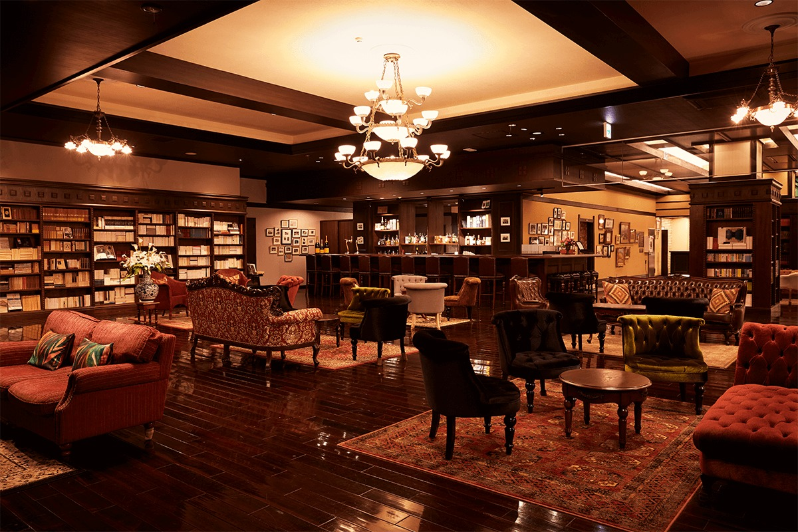
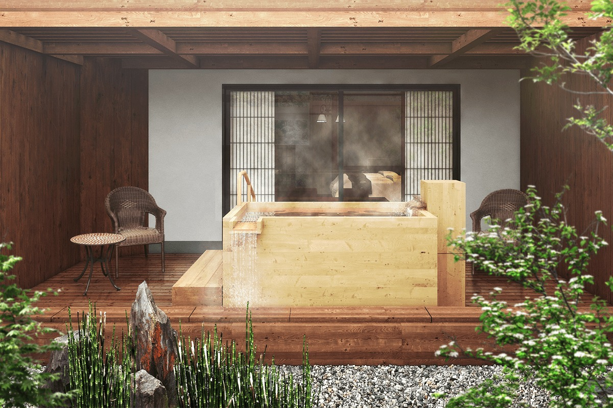
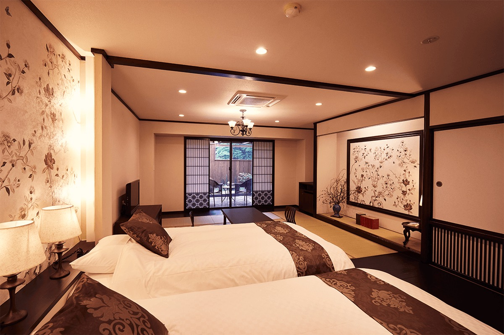
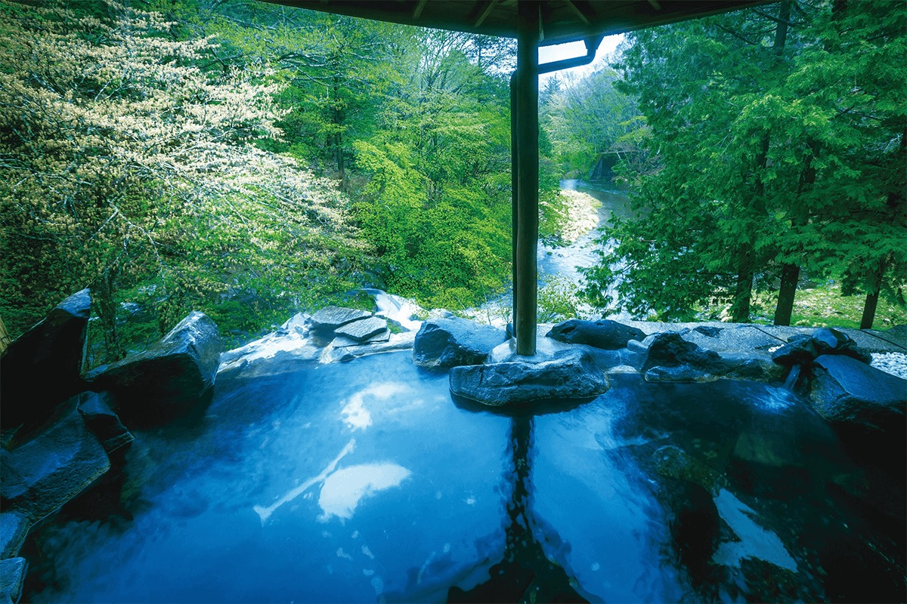
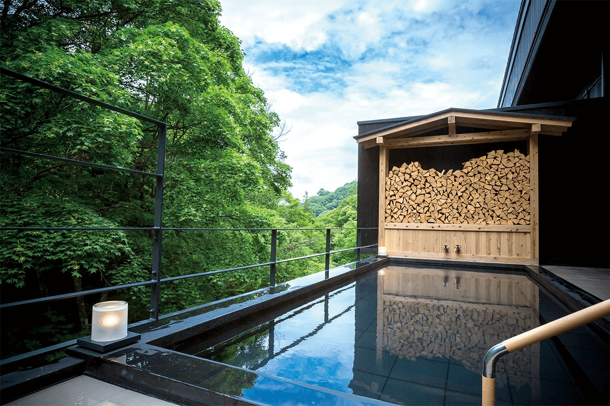
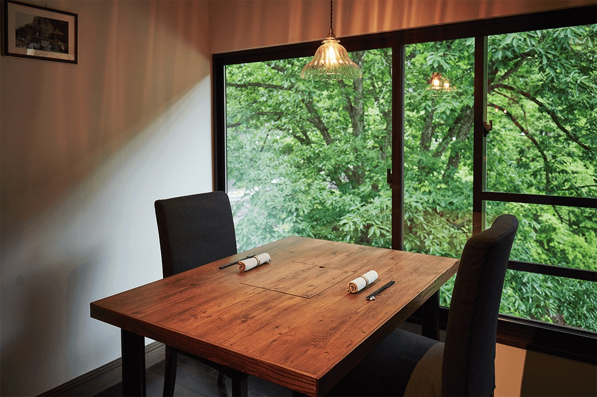
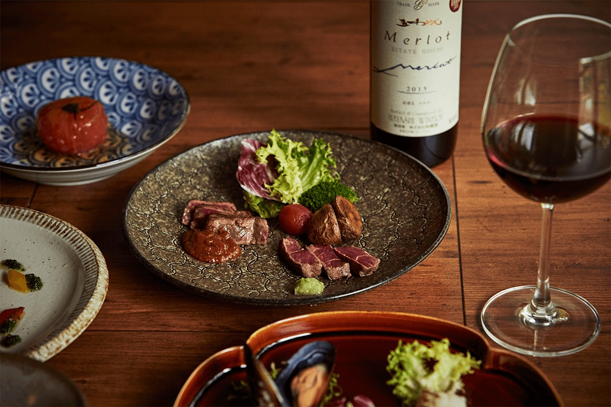
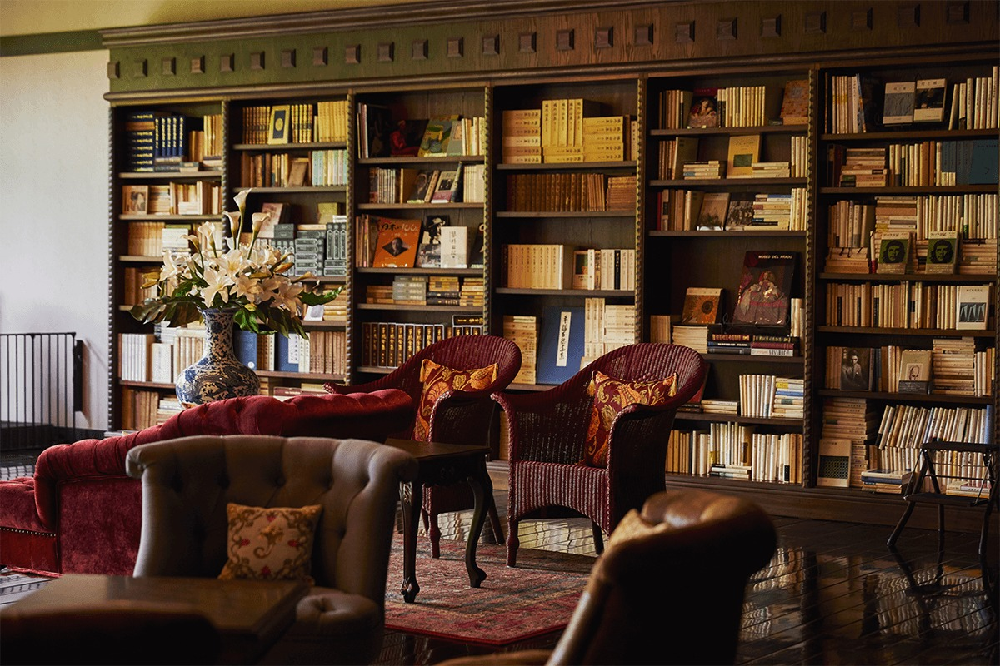
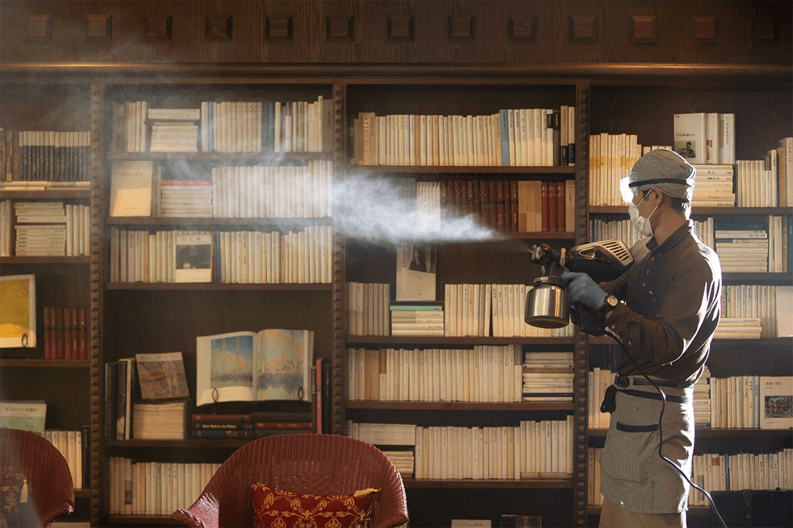
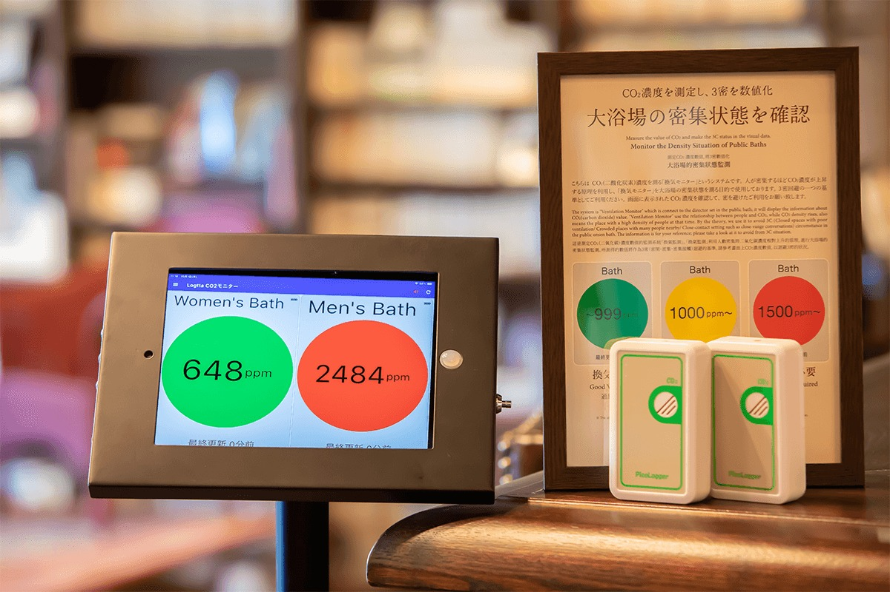

Префектура Нагано · Татэсина · рёкан и онсэн
Tateshina Shinyu Onsen: рёкан в Татэсине с библиотекой на 30 000 книг и ваннами у горной реки

В горах Татэсины стоит рёкан, где вечером читают классиков японской литературы в гостиной на 30 000 томов, а потом идут в открытую ванну у горной реки. Tateshina Shinyu Onsen работает с 1926 года и к своему столетию постепенно обновил почти всё.
История
Рёкан с литературным прошлым
Татэсина это курортный район онсэнов на плато в городе Тино. Рёкан Tateshina Shinyu Onsen открылся здесь в 1926 году. С ним связаны имена многих писателей и поэтов, а сама Татэсина в те годы была культурным центром округи.
Это прошлое рёкан и сделал своей темой. В 2016 году хозяева начали «проект обратного отсчёта» к столетию: каждый год что-то обновляли, чтобы встретить юбилей в новом виде. Тогда же на берегу озера Сува, в соседнем городе, открылась сестринская гостиница sui. В 2017 году появилась открытая ванна у реки, в которую можно выйти прямо из общей бани. В 2018 году рёкан получил ресторан с отдельными залами и гостиную-библиотеку с баром, в апреле 2019 года обновил все номера, а 12 декабря 2020 года во внутренних садиках части номеров поставили собственные ванны.

Обновляя рёкан, хозяева хотели сохранить память о Татэсине эпох Мэйдзи, Тайсё и Сёва. Отсюда и библиотека, и номера, названные в честь писателей.
Номера
Десять комнат, десять имён
Такая ванна есть в части номеров, купаться в ней можно когда угодно и сколько угодно, на свежем горном воздухе.
Особые номера собраны в «Татэсина курабу». Каждая из десяти комнат посвящена кому-то из литераторов, связанных с рёканом, и оформлена по-своему. Одна носит имя поэтической школы «Арараги», другие названы в честь её поэтов Сатио Ито (1864–1913), Акахико Симаки (1876–1926), Мокити Сайто (1882–1953) и Буммэй Цутии (1890–1990), мастера хайку Кёси Такахамы (1874–1959), писателей Осаму Дадзая (1909–1948), Ая Коды (1904–1990) и Анну Кобори (1909–1998) и поэтессы Бякурэн Янагивары (1885–1967). Пять из десяти номеров устроены без барьеров, ими удобно пользоваться и на коляске.

Есть и другие варианты: номера с красивым видом из окна, японские комнаты с кроватями, более доступные номера в японском и западном стиле и отдельное крыло в глубине здания.
Онсэн
Тайная купальня Сингэна Такэды
Источник рёкана называют тайной купальней Сингэна Такэды. Так называют горячие источники, которыми, по преданию, тайно пользовался этот полководец (1521–1573), правитель соседней провинции Каи. Воду здесь ещё считают «водой красоты»: после купания кожа становится гладкой.

Открытых ванн пять: три семейные, которые можно занять на 30 минут бесплатно, одна при общей бане и одна женская, «Тэнъё-но ю». После 21:00 женскую ванну тоже можно взять как семейную. Все пять стоят у горной реки, поэтому в каждой есть вид и шум воды. Пол в общей бане выстлан татами: он не скользкий, и даже если поскользнуться, удариться труднее.

Ужин
«Мисудзукари»: еда за закрытыми дверями
Завтракают и ужинают в ресторане «Мисудзукари», где каждый стол стоит в отдельном зале: никто не смотрит, как вы едите. В ресторане есть винный погреб с винами Нагано и сакэ из окрестностей Сувы, а выбрать помогает сомелье.

Название ресторана взято из древней поэзии. «Мисудзу-кару», «где режут тонкий бамбук», в антологии «Манъёсю» служит постоянным эпитетом провинции Синано, современной Нагано. Эти слова сложили люди эпохи Асука, когда в Японии ещё не было письменности: глядя на заросли тонкого бамбука в диких полях Синано, они невольно запели. Ресторан назвали так, чтобы гости пробовали щедрую еду этого края с прозрачным воздухом и чистыми реками.
Ужин «Татэсина яма-кюизин» это японская кухня с французскими приёмами из продуктов гор Татэсины. Самое известное блюдо здесь суп-карри, ради которого гости приезжают снова. Тем, кто остаётся на две ночи, во второй вечер подают «Татэсина яма-гохан», ужин на основе японской кухни. На завтрак приносят японский сет из множества маленьких тарелочек с понемногу всего вкусного из Синсю, а к нему салат-бар со свежими овощами с плато.

Библиотека
30 000 книг и бар
Главная гордость рёкана это гостиная-библиотека с баром «Мисудзу» и галерея книг издательства «Иванами». Основатель издательства «Мисудзу сёбо» родом из Тино, а основатель «Иванами сётэн» из соседней Сувы. Оба издательства много сделали для японской литературы и философии, и рёкан, гордясь земляками, назвал залы в их честь.

Около 30 000 книг можно брать с полок и читать. Среди них полные собрания сочинений и редкие издания в тех самых обложках, в которых они вышли в начале эпохи Сёва, в конце 1920-х и 1930-е годы. Классический бар напоминает о том времени, и здесь можно провести вечер за книгой с вином или виски в руке.
2020
Меры безопасности в 2020 году
С 1 июня 2020 года рёкан ввёл собственную программу гигиены из более чем 30 пунктов. Она охватывала три направления: чистоту здания, защиту от передачи инфекции от человека к человеку и обучение персонала. Кроме спиртовых антисептиков, залы и номера обрабатывали распылителем, у сотрудников каждый день мерили температуру, а мыть руки учили с проверкой чистоты специальным тестом.

С октября 2020 года в общей бане следили за углекислым газом: чем больше людей, тем выше его концентрация. Экран показывал её тремя цветами и подавал сигнал. Зелёный (до 999 ppm) значил, что людей мало, жёлтый (1000–1499 ppm) советовал проветрить, красный (от 1500 ppm) говорил, что в бане тесно. Пороги взяли из рекомендаций Министерства здравоохранения, труда и благосостояния Японии.

Онсэн из собственного источника, местное сакэ, продукты гор и классики японской литературы на полках: Tateshina Shinyu Onsen предлагает провести в Татэсине несколько неторопливых дней.
Tateshina Shinyu Onsen
- Адрес
- префектура Нагано, Тино, Китаяма, Татэсина-Когэн, 4035
- Телефон
- +81 266-67-2020